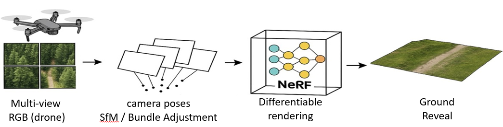

Method Overview
Our pipeline starts from high-overlap RGB captures, reconstructs a neural 3D scene, and then applies canopy-removal filtering to produce ground-focused renderings for downstream analysis.

Abstract
Key Contributions
Capture Guidelines
Results
Perceptual Recovery Under Heavy Occlusion
In a synthetic dense-canopy scene with ground-truth available, our volumetric NeRF-based reconstruction achieves lower LPIPS than vanilla 3DGS (0.56 vs. 0.68), indicating better perceptual recovery of hidden ground structure under severe canopy occlusion.
Under heavy canopy occlusion, our method preserves more perceptual ground structure than vanilla 3DGS.
Downstream App Examples
Citation